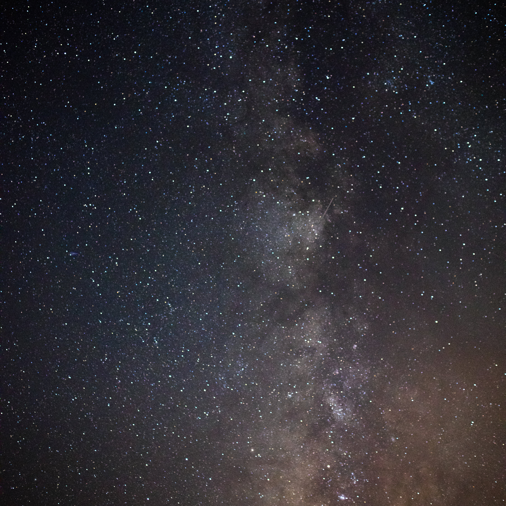
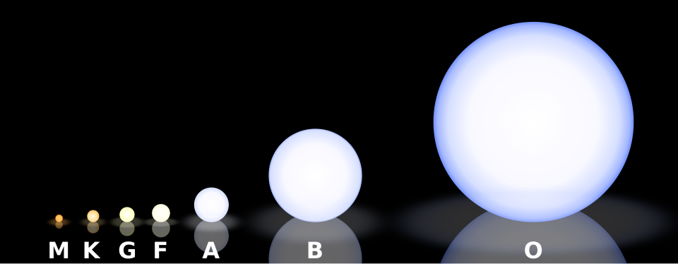
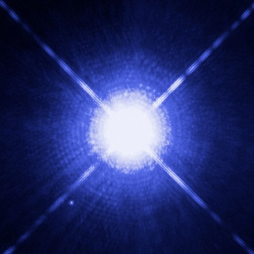
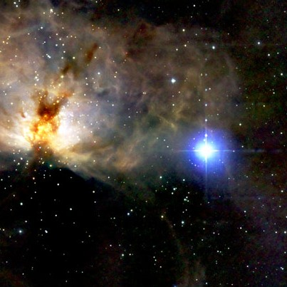
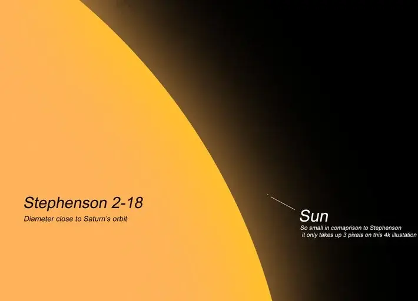

Zvaigznes

Kas ir zvaigznes Visumā?
Zvaigzne ir masīvs, pašspīdošs debess ķermenis, kas sastāv no gāzes un plazmas, kurā notiek, ir notikušas vai notiks kodolreakcijas. Zemei tuvākā zvaigzne ir Saule; citas zvaigznes nakts debesīs parādās kā dažāda spilgtuma punkti, kas saglabā savu relatīvo pozīciju. Zvaigznes atšķiras pēc struktūras un ķīmiskā sastāva, un tādi parametri kā rādiuss, masa un spožums var atšķirties par lieluma pakāpēm starp dažādām zvaigznēm.
Zvaigžņu spektrālā klasifikācija
Zvaigžņu spektrālā klasifikācija ir zvaigžņu klasifikācija pēc to spektru īpašībām. Galvenās zvaigžņu spektrālās klases, dilstošā temperatūras secībā, no zilākas līdz sarkanīgākai, ir O, B, A, F, G, K un M. Lielākā daļa zvaigžņu, tostarp Saule (kas pieder pie G2V klasifikācijas), pieder šīm spektrālajām klasēm.

unikālas zvaigznes mūsu Visumā:

Siriuss
Sīriuss ir spožākā zvaigzne nakts debesīs. Sīriusu var redzēt no jebkura punkta Ziemeļu puslodē, izņemot pašus ziemeļus Sīriuss atrodas 8,6 gaismas gadu attālumā no Saules sistēmas un ir viena no tuvākajām zvaigznēm. Sīriuss ir galvenās secības zvaigzne, ietilpst A1 spektrālajā klasē.
Alnitak
Zvaigzne Oriona zvaigznājā, kas ir spožākā O klases zvaigzne ar vizuālo spožumu +1,72, ir vistālāk kreisajā pusē esošā un tuvākā zvaigzne asterismā "Oriona josta". Oriona joslā ietilpst Mintaka un Alnitaks. Alnitaks atrodas aptuveni 817 gaismas gadu attālumā. Tā ir trīskāršā zvaigzne. Galvenā zvaigzne ir karsta zila supergigants ar absolūto spožumu -5,25. Tai ir divi zilgani pavadoņi ar spožumu 4 un 10. Šīs zvaigznes ir Orion OB1 asociācijas locekles.


Stephenson 2-18
Stephenson 2-18 ir spilgti sarkana supergigants jeb hipergigants, kas ietilpst Stīvensona 2 zvaigžņu kopā Piena Ceļa galaktikā. Tā atrodas 18 910 gaismas gadu attālumā no Zemes. Ar aptuveni 1840 reižu lielāku rādiusu nekā Saulei, tā ir viena no lielākajām zināmajām zvaigznēm.